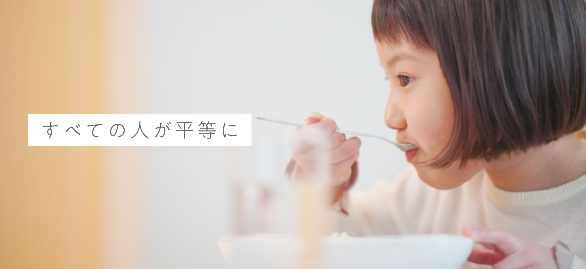
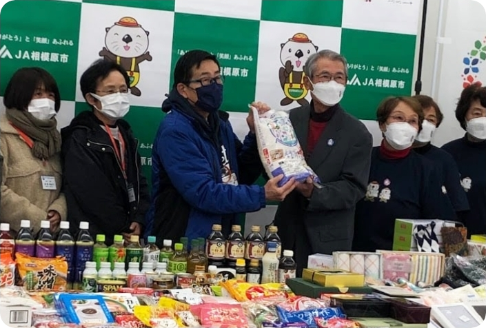
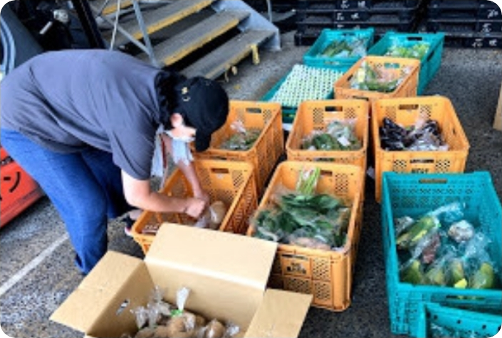
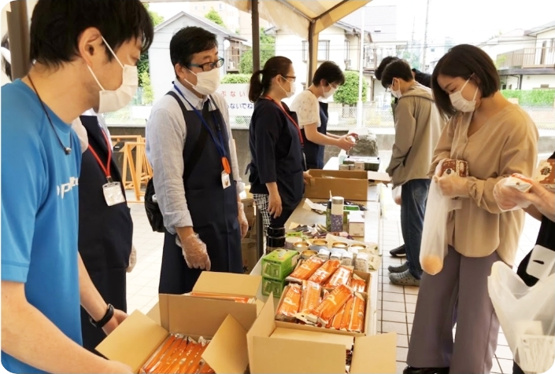

フードコミュニティとは
About
この団体は、相模原市の地域包括ケア推進課が主催している「地域活動実践講座」の
受講生で構成されています。藤野に住む研修生からの「作った作物の一部をこども食堂
などに寄付できないか？」というアイディアがきっかけとなり、2016年に団体を立ち上げました。
食材を中心に生活用品や文房具なども提供しております。持続可能な活動を行うため、
今後も社会貢献となる活動に全力を注いで行きます。

子育て家庭を食材配布で応援する仕組み
Concept
相模原市の皆様や企業様から野菜や果物、贈答品。規格外食品等を寄付していただき、
こども食堂や子育て世帯に届ける支援をしております。
食材の有効活用により、食品ロスを削減し、必要な人々に提供することで、
色による格差をなくすという考えを大切にしております。

活動内容
Activity
子育て家庭を食材配布で応援します！フードバンクなどから提供された食材を
子育て世帯へ配布します。毎月50世帯、対象のご家庭に会場での受け取り、
またはご自宅への配送をおこないます。※事前申し込み制
【お申し込みできる世帯の方】
● 児童扶養手当受給世帯
● ひとり親家庭等医療費助成世帯
● 就学奨励金交付決定世帯

寄付をする際の注意点
回収条件に当てはまらない食材、商品は回収することができません。
食品
① 未開封であること
② 賞味期限の記載があり1か月以上あるもの
③ 常温保存が可能なもの
（要冷蔵・冷凍品は事前にご連絡ください。）
生活用品
① 未開封であること
② 食器や家電製品、刃物等（包丁等）、可動性のもの
③ 数にはこだわりませんが、
多量の際は事前にご連絡ください。
寄付を・活動を応援する
フードコミュニティの活動をご支援くださる方からの温かいご支援、お願いいたします。
運営協力
ボランティアでのご支援
お金の寄付
寄付金のご支援
食品の寄付
お米、野菜、保存食品、
乾物、調味料、お菓子など
生活用品の寄付
日用品、台所用品、文房具など
お知らせ
News
フードコミュニティからのお知らせ・活動報告はFacebookで行っています。
下のリンクからご覧ください。